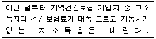
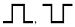
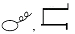
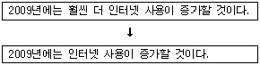
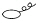
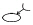
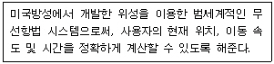
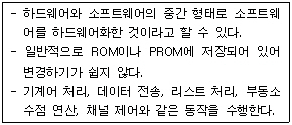
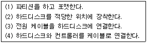

워드프로세서-2급(폐지) (2009-04-12 기출문제)
1과목: 워드프로세서 용어 및 기능
1. 다음 중 그래픽 모드 표시 형식에 대한 설명으로 옳지 않은 것은?
- 그림을 본문의 적당한 위치에 배치할 수 있다.
- 다양한 글자체를 사용할 수 있다.
- 위지윅(WYSIWYG)기능의 구현이 가능하다.
- 텍스트 모드에 비해 처리속도가 빠르다.
(정답률: 75%)

2. 다음 중 저장하기(Save) 명령어 실행될 때의 가장 적절한 의미는?
- 주기억장치에 있는 내용을 보조기억장치에 저장한다.
- 보조기억장치에 있는 내용을 주기억장치에 저장한다.
- 중앙처리장치에 있는 내용이 주기억장치에 저장된다.
- 중앙처리장치에 있는 내용이 보조기억장치에 저장된다.
(정답률: 76%)
3. 다음 중 인쇄 기능에 대한 설명으로 옳지 않은 것은?
- 모든 프린터는 고유한 프린터 드라이버를 가지고 있다.
- 피치(Pitch)가 클수록 문자와 문자사이의 간격이 넓게 인쇄된다.
- 프린터의 해상도를 나타내는 단위는 DPI이다.
- 레이저 프린터의 인쇄 속도 단위는 PPM을 사용한다.
(정답률: 74%)
4. 다음 중 파일의 확장자와 형식이 잘못 연결된 것은?
- TXT - 텍스트파일
- BAK - 압축저장파일
- HTM - 인터넷문서파일
- DOC - 워드문서파일
(정답률: 73%)
5. 다음 중 한 단어가 행의 마지막에서 끊어져서 다음의 행으로 단어가 연결됨을 표시하는 이음선을 무엇이라 하는가?
- 캡션
- 커서
- 하이픈
- 워드랩
(정답률: 59%)
6. 다음 중 스풀(Spool)에 대한 설명으로 옳은 것은?
- 문서를 인쇄하는 도중에 다른 작업을 할 수 있도록 하는 기능이다.
- 주기억장치와 출력장치간의 속도 차를 해결하기 위한 방법이다.
- 출력할 자료를 주기억장치에 저장하였다가 프린터가 출력 가능한 시기에 출력시킨다.
- 마지막에 저장한 자료만 유효하다.
(정답률: 72%)
7. 다음 중 검색에 대한 설명으로 옳지 않은 것은?
- 특정단어의 위치를 쉽게 찾아 이동한다.
- 문서양의 변화를 가져올 수 있다.
- 본문 밖에 숨어있는 머리말, 꼬리말 등의 내용도 검색 가능하다.
- 대소문자, 한글, 영문, 특수문자 등의 검색도 가능하다.
(정답률: 71%)
8. 다음 중 그림 삽입에 대한 설명으로 옳지 않은 것은?
- 문서에 포함해서 저장할 수 없다.
- 그림의 크기를 조절할 수 있다.
- 흑백 또는 명암 등을 조정할 수 있다.
- 문서의 내용과 겹쳐 보이도록 그림을 투명 상태로 설정할 수 있다.
(정답률: 76%)
9. 다음 보기의 내용에 적용되고 있는 정렬 방식은 무엇인가?

- 왼쪽 정렬(왼쪽 맞춤)
- 오른쪽 정렬(오른쪽 맞춤)
- 양쪽 배분정렬(균등 분할 맞춤)
- 가운데 정렬(가운데 맞춤)
(정답률: 90%)
10. 문서의 각 페이지 하단에 동일한 형태로 특정 문자열이나 페이지 번호 등을 자동으로 삽입하게 하는 기능은?
- 두문 기능
- 미문 기능
- 자동 기능
- 색인 기능
(정답률: 67%)
11. 다음 중 워드프로세서의 입력 및 편집기능에 대한 설명으로 옳지 않은 것은?
- 문단 정렬은 별도의 영역지정이 없어도 정렬이 가능하다.
- 치환으로 문서 내에서 특정문자를 찾아 크기, 속성 등을 바꿀 수 있다.
- 버퍼란 문서편집 중 특정 값이나 문자를 일시적으로 보관하는 기억장소이다.
- 한 행의 내용이 꽉 차기 전에 [Enter]키를 눌러 강제로 줄을 바꾸는 기능을 “자동 개행”이라고 한다.
(정답률: 70%)
12. 다음 중 파일명에 대한 설명으로 옳지 않은 것은?
- 파일 확장자는 사용자가 임의로 바꿀 수 없다.
- 파일의 확장자를 보고 파일의 종류를 알 수 있다.
- 문서 저장 시 사용자가 확장자를 입력하지 않아도 기본 확장자로 저장된다.
- 파일 이름과 확장자는 점(.)으로 구분한다.
(정답률: 68%)
13. 전자문서의 서명을 어떻게 하나?
- 프린터 출력 후 관인사용
- 서명표시인 사용
- 전자이미지 서명을 자동적으로 생성한 후 사용
- 경우에 따라 다르다.
(정답률: 70%)
14. 다음 중 낱장 용지의 크기에 대한 설명으로 옳지 않은 것은?
- 현재 대부분의 프린터에서 사용하는 인쇄용지로 A판과 B판이 있다.
- 인쇄 용지에서 뒤의 숫자가 같을 경우 A판이 B판보다 크다.
- 같은 A 또는 B판에서 뒤의 숫자가 작을수록 용지의 크기는 크다.
- 같은 A 또는 B판에서 뒤의 숫자가 1씩 커질수록 용지의 크기는 절반으로 줄어든다.
(정답률: 78%)
15. 다음 중 사무 관리의 원칙이 아닌 것은?
- 신속성
- 용이성
- 경제성
- 전파성
(정답률: 89%)
16. 다음 중 한자의 음을 모를 때의 입력 방법으로 알맞은 것은?
- 단어 변환
- 문장 자동 변환
- 외자 입력 변환
- 한글/한자 음절 변환
(정답률: 72%)
17. 다음 중 서로 반대되는 의미를 갖는 교정부호가 아닌 것은?


(정답률: 80%)
18. 다음 중 행두 금칙 문자가 아닌 것은?
- !
- >
- $
- ?
(정답률: 85%)
19. 다음 중 화면의 해상도에 대한 설명으로 옳지 않은 것은?
- 해상도가 높을수록 선명하다.
- 해상도란 표시되는 내용이 얼마나 선명하게 나타는가를 수치적으로 표현한 것이다.
- 화소(Pixel)는 화면을 구성하는 최소 단위이다.
- 해상도는 화면 대각선의 화소(Pixel)수로 표시된다.
(정답률: 68%)
20. 다음의 보기와 같이 문장의 내용을 수정하고자 할 때 사용될 교정부호는?



(정답률: 84%)
2과목: PC 운영 체제
21. 한글 Windows XP에서 시스템이 정상 상태로 시동되지 않을 때, 필수적인 기능만으로 부팅하는 모드로 옳은 것은?
- 표준 모드로 Windows 시작
- VGA 모드
- 안전 모드
- 디버그 모드
(정답률: 85%)
22. 다음 중 한글 Windows XP에서 설치된 응용 프로그램을 정상적으로 제거하는 방법으로 가장 옳은 것은?
- 작업 표시줄에 있는 해당 프로그램의 아이콘을 삭제한다.
- [시작]-[모든 프로그램]항목에서 해당 프로그램을 선택하고 오른쪽 마우스를 클릭하여 [삭제]를 선택한다.
- 바탕 화면에 있는 해당 프로그램의 바로 가기 아이콘을 삭제한다.
- [프로그램 추가/제거]창에서 해당 프로그램을 선택하고 [변경/제거]버튼을 눌러서 삭제한다.
(정답률: 78%)
23. 한글 Windows XP의 [시스템 도구]중에서 [디스크 정리]를 이용하여 할 수 있는 기능으로 옳지 않은 것은?
- Windows 시스템 파일의 제거
- 휴지통 비우기
- 다운로드한 프로그램 파일의 제거
- 임시 인터넷 파일의 제거
(정답률: 54%)
24. 다음 중 한글 Windows XP의 작업 표시줄에 있는 알림 영역에 관한 설명으로 옳은 것은?
- 컴퓨터의 현재 시간이 표시되며, 볼륨이나 특정 프로그램 정보 등을 볼 수 있다.
- 실행 중인 프로그램이나 폴더 창이 나타난다.
- 자주 사용하는 프로그램을 등록해 놓고 클릭을 한 번만 하면 프로그램을 빠르게 실행할 수 있다.
- 인터넷 익스플로러의 연결 항목에 등록된 웹 사이트로 빠르게 접속할 수 있다.
(정답률: 52%)
25. 다음 중 한글 Windows XP의 특징에 대한 설명으로 옳지 않은 것은?
- 플러그 앤 플레이 기능을 지원한다.
- 비 선점형 멀티태스킹을 사용한다.
- FAT32뿐만 아니라 NTFS파일 시스템을 지원한다.
- USB와 같은 하드웨어 연결 포트를 지원한다.
(정답률: 67%)
26. 다음 중 한글 Windows XP 운영체제에서 기본적으로 제공하는 기능으로 옳지 않은 것은?
- 프로세스 관리
- 파일 관리
- 사용자 인터페이스 제공
- 데이터베이스 관리
(정답률: 56%)
27. 한글 Windows XP의 하드디스크에 대한 [포맷]창의 항목 중 디스크에서 파일을 제거하지만 디스크의 불량 섹터를 검색하지는 않도록 포맷을 설정하는 것은?
- MS-DOS 시동 디스크 만들기
- 압축 사용
- 빠른 포맷
- 볼륨 레이블
(정답률: 77%)
28. 다음 중 한글 Windows XP에서 파일 관리에 관한 설명으로 옳지 않은 것은?
- 같은 폴더 내에 이름이 같은 여러 개의 파일을 만들 수 있다.
- 폴더 내에 여러 개의 하위 폴더를 만들 수 있다.
- 특정 문서 파일을 클릭하면 이에 연결된 프로그램을 실행할 수 있다.
- 네트워크를 통해 다른 컴퓨터와 파일을 공유할 수 있다.
(정답률: 68%)
29. 한글 Windows XP에서 사용할 수 있는 바로가기 키에 관한 설명으로 옳지 않은 것은?
- [F2] : 폴더 또는 파일의 이름을 바꿀 때 사용한다.
- [Shift] + [Delete] : 휴지통을 거치지 않고 파일을 삭제할 때 사용한다.
- [Alt] + [F4] : 활성화된 창을 닫을 때 사용한다.
- [F3] : 작업 표시줄에 여러 개의 창에서 다른 창으로 전환할 때 사용한다.
(정답률: 80%)
30. 한글 Windows XP의 [인터넷 프로토콜(TCP/IP) 등록정보] 창에서 TCP/IP 지정을 위한 구성 요소로 옳지 않은 것은?
- 기본 게이트웨이
- 최대 소켓(Socket)의 수
- IP 주소
- 기본 설정 DNS 서버
(정답률: 73%)
31. 다음 중 한글 Windows XP에서 제공하는 클립보드에 관한 설명으로 옳지 않은 것은?
- 작업 도중 복사하거나 이동할 때, 데이터가 잠시 기억되는 임시 장소이다.
- 전원이 꺼지거나 시스템을 다시 시작할 경우에 클립보드의 내용은 삭제된다.
- 하드디스크를 사용하는 일종의 가상 메모리이다.
- 활성화된 창의 이미지를 클립보드에 캡처하려면 [Alt] + [PrtScr]키를 사용한다.
(정답률: 60%)
32. 다음 중 한글 Windows XP에서 CD-ROM을 CD-ROM드라이브에 삽입할 때 자동실행 기능이 없도록 하기 위하여 사용하는 키는?
- [Ctrl]
- [Alt]
- [Shift]
- [Esc]
(정답률: 64%)
33. 다음 중 한글 Windows XP의 [그림판]프로그램에서 사용할 수 있는 파일의 확장자 형식으로만 열거한 것으로 옳은 것은?
- *.HWP, *.PCX, *.GIF
- *.BMP, *.GIF, *.TXT
- *.PDF, *.JPG, *.TXT
- *.BMP, *.JPG, *.GIF
(정답률: 78%)
34. 다음 중 한글 Windows XP에 설치된 기본 프린터의 속성 창에서 설정할 수 없는 것은?
- 프린터 이름의 변경
- 공유 설정
- 포트 변경
- 설치된 프린터의 삭제
(정답률: 52%)
35. 다음 중 한글 Windows XP를 부팅한 후에 특정 응용프로그램을 자동으로 실행하도록 하려면 해당 프로그램은 어느 폴더에 있어야 하는가?
- [시작 메뉴]
- [시작프로그램]
- [바탕화면]
- [Program Files]
(정답률: 63%)
36. 한글 Windows XP에서 [시작]메뉴의 [로그오프]기능으로 가장 옳은 것은?
- 네트워크 연결이 끊어지며, 다른 사용자를 위한 사용자 전환을 선택할 수 있다.
- 네트워크로 연결된 컴퓨터에서 현재 사용자의 시스템을 대기 모드로 설정할 수 있다.
- 사용 중인 모든 프로그램을 저장하고 안전하게 시스템을 종료할 수 있다.
- 모든 프로그램을 종료한 뒤 시스템을 안전 모드로 다시 부팅할 수 있다.
(정답률: 55%)
37. 다음 중 한글 Windows XP를 처음 설치하였을 때 바탕화면에 기본적으로 표시되는 아이콘으로 옳은 것은?
- [Windows 탐색기]
- [내 컴퓨터]
- [휴지통]
- [내 네트워크 환경]
(정답률: 79%)
38. 다음 중 한글Windows XP에서 마우스의 오른쪽 버튼을 눌렀을 때 나타나는 바로 가기 메뉴에 관한 설명으로 옳은 것은?
- [작업 표시줄]에서는 바로 가기 메뉴가 나타나지 않는다.
- 마우스 포인터가 위치한 영역에 따라서 바로 가기 메뉴의 항목이 다르게 표시된다.
- 바로 가기 메뉴에 표시되는 각 항목은 하위 메뉴를 포함하지 않는다.
- 바로 가기 메뉴의 내용은 절대로 변경할 수 없다.
(정답률: 55%)
39. 한글 Windows XP에서 파일에 관한 등록정보 창을 이용하여 할 수 있는 작업으로 옳지 않은 것은?
- 해당 파일의 크기를 알 수 있다.
- 해당 파일의 바로가기 아이콘을 만들 수 있다.
- 해당 파일의 읽기 전용 특성을 설정할 수 있다.
- 해당 파일의 수정한 날짜를 알 수 있다.
(정답률: 50%)
40. 한글 Windows XP의 [제어판]에 있는 [키보드]의 등록정보 창에 관한 설명으로 옳지 않은 것은?
- 커서 모양을 변경할 수 있다.
- 문자 반복에 의한 재입력 시간을 조절할 수 있다.
- 문자 반복에 의한 반복 속도를 조절할 수 있다.
- 커서 깜박임 속도를 조절할 수 있다.
(정답률: 67%)
3과목: PC 기본 상식
41. 다음의 인터넷 보안 침입 형태 중 송신한 데이터가 수신지까지 가는 도중에 몰래 보거나 도청하는 행위는?
- 가로채기
- 부인봉쇄
- 수정하기
- 위조하기
(정답률: 90%)
42. 다음 중 운영체제의 종류와 거리가 먼 것은?
- Oracle
- UNIX
- Windows XP
- Linux
(정답률: 65%)
43. CD_ROM 타이틀의 활용분야 중에서 컴퓨터를 통하여 고가의 기계를 다루는 방법을 학습함으로써 비용부담을 절감할 수 있는 것은 무엇인가?
- 아케이드 게임
- CBT(Computer Based Training)
- IBT(Internet Based Testing)
- 애니메이션
(정답률: 76%)
44. 다음 중 근거리 통신망을 의미하는 용어는?
- WAN
- VAN
- MAN
- LAN
(정답률: 83%)
45. 인터넷 방송과 같이 통신망을 통해 가입자가 원하는 프로그램을 원하는 시간에 선택해서 볼 수 있게 하는 서비스는?
- 가상현실(VR)
- 화상회의 시스템(VCS)
- 주문형 비디오(VOD)
- 의료영상저장전송시스템(PACS)
(정답률: 86%)
46. 다음 중 PDA(Personal Digital Assistants)에 대한 설명으로 옳지 않은 것은?
- 전자수첩과 이동통신, 개인정보관리기능 등을 가지고 있다.
- 팜톱의 일종으로 펜이나 터치스크린으로 입력한다.
- Windows CE, CelVic OS 등 GUI방식의 운영체제를 사용한다.
- 소형 컴퓨터이므로 대부분 RISC프로세서를 사용한다.
(정답률: 52%)
47. 다음 중 보조기억장치에 대한 설명으로 옳지 않은 것은?
- 저장된 정보를 반영구적으로 보관할 수 있다.
- 현재 사용하지 않는 프로그램이나 데이터를 보조기억장치에 기억시켜두었다가 필요할 때 다시 사용할 수 있다.
- 주기억장치에 비해 읽는 속도가 느리나, 저렴한 가격에 많은 정보를 저장시킬 수 있다.
- 보조기억장치에 저장된 정보를 실행시키면 주기억장치를 거치지 않고 바로 실행된다.
(정답률: 63%)
48. 다음 보기의 내용은 무엇을 설명한 것인가?

- GIS
- GPS
- GTS
- GDS
(정답률: 79%)
49. 다음 중 언제 어디서나 자유롭게 네트워크를 통해서 컴퓨터에 접속할 수 있는 환경을 의미하는 것은?
- 광속 상거래(CALS)
- 제닉스(XENIX)
- 유비쿼터스
- 인트라넷
(정답률: 77%)
50. 다음 보기의 내용에 적합한 것은 무엇인가?

- 펌웨어 프로그램
- 임베디드 시스템
- 인터럽트 프로그램
- RISC 프로그램
(정답률: 65%)
51. 다음 중 텍스트뿐만 아니라 이미지, 그래픽, 사운드, 동영상 등을 포함한 정보가 링크로 서로 연결된 것을 무엇이라고 하는가?
- 플러그인
- 웹 브라우저
- 스트리밍
- 하이퍼미디어
(정답률: 75%)
52. 두 장의 유리판 사이에 네온 및 아르곤 가스를 넣고, 전압을 가해 빛을 발생시켜 화면을 보여주는 출력장치는?
- LCD
- CRT
- PDP
- LED
(정답률: 63%)
53. 다음 중 컴퓨터의 발전과정 순으로 바르게 나열된 것은?
- MARK-I → EDSAC → ENIAC → EDVAC
- MARK-I → ENIAC → EDSAC → EDVAC
- ENIAC → MARK-I → EDVAC → EDSAC
- ENIAC → MARK-I → EDSAC →EDVAC
(정답률: 72%)
54. 다음 중 운영체제에 대한 설명으로 가장 옳은 것은?
- 하드웨어와 응용 프로그램 사이의 인터페이스 역할을 한다.
- 일반적으로 크고 복잡하지만 단일 프로그램이다.
- 보통 사용자가 계속적으로 중재를 해 줄 것을 요구한다.
- 컴퓨터 시스템 내의 자원관리와는 무관하다.
(정답률: 61%)
55. 다음 중 하드디스크를 설치하는 순서가 올바르게 나열된 것은?

- 3→2→4→1
- 4→2→3→1
- 2→4→3→1
- 2→3→4→1
(정답률: 59%)
56. 다음 중 데이터를 수신하는 즉시 출력장치에 표시함으로써 송수신자 간의 정보 전달시간 지연을 줄이는 멀티미디어 전송기법을 무엇이라고 하는가?
- Real Time Play
- Quick View
- Applet
- Streaming
(정답률: 67%)
57. B-ISDN이나 초고속정보통신망에서 사용하는 전송모드로서 비동기전송모드라고 불리는 전송모드는?
- STM
- ATM
- VAN
- WAN
(정답률: 56%)
58. 다음 중 컴퓨터 바이러스에 대한 설명이 옳지 않은 것은 무엇인가?
- 부팅 영역을 감염시켜 컴퓨터 부팅시 에러를 유발하는 것을 부트 바이러스라 한다.
- 바이러스 프로그램은 자기 복제를 하는 특징을 가지고 있다.
- 컴퓨터 바이러스는 네트워크를 통하여 확산되지 않는다.
- 매크로 바이러스는 자동 실행하는 스크립트를 이용하여 감염시킨다.
(정답률: 74%)
59. 다음 중 기억장치의 접근 시간을 빠른 것에서 느린 것으로 순서대로 나열한 것은?
- 캐시기억장치→레지스터→주기억장치→하드디스크→자기테이프
- 레지스터→캐시기억장치→주기억장치→하드디스크→자기테이프
- 캐시기억장치→주기억장치→레지스터→자기테이프→하드디스크
- 레지스터→주기억장치→캐시기억장치→자기테이프→하드디스크
(정답률: 82%)
60. 다음 중 컴퓨터 시스템의 보안과 관련이 없는 것은?
- 웹 캐싱
- 방화벽
- 침입탐지시스템
- 사용자 인증
(정답률: 72%)
텍스트 모드에 비해 처리속도가 빠른 이유는 그래픽 모드에서는 이미지나 그래픽 요소를 미리 그려놓고 화면에 표시하기 때문에 처리 속도가 빠르다. 반면에 텍스트 모드에서는 문자 하나하나를 화면에 출력하기 때문에 처리 속도가 느리다.